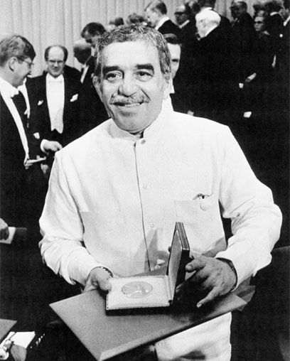

<h1>Sugerencia de palabras: Cadenas de Markov</h1>

<div fxLayout="row" fxLayoutAlign="space-evenly center">
  <ul class="galeria tape">
    <li>
      <figure>
        <figcaption>Gabriel García Márquez, Premio Nobel de literatura el 8 de diciembre de 1982.</figcaption>
      </figure>
    </li>
  </ul>

  <form class="words-form" [formGroup]="wordForm">
    <h3>TU TEXTO, AQUÍ 👇</h3>
    <mat-form-field class="example-full-width" appearance="fill">
      <textarea type="text" placeholder="Escribe una palabra" aria-label="Number"
        (ngModelChange)="getPredictWord($event)" matInput formControlName="word"></textarea>
      <mat-error *ngIf="wordForm.controls.word.hasError('required')">Este campo es
        <strong>obligatorio</strong>
      </mat-error>
    </mat-form-field>
  </form>

  <div class="suggested">
    <h3>Palabras sugeridas:</h3>
    <main *ngIf="suggested_words" gdColumns="1fr 1fr 1fr 1fr 1fr" gdColumns.lt-md="1fr 1fr 1fr 1fr"
      gdColumns.xs="1fr 1fr 1fr" gdGap="16px">
      <div *ngFor="let word of suggested_words">
        <button color="primary" mat-raised-button type="submit" (click)="addWordToInput(word)">
          {{ word }}
        </button>
      </div>
    </main>
  </div>
  <p>{{ input_chain }}</p>
</div>

<footer>
  Realizado por: Johann Nicolas Nieto Cardenas & Laura Tatiana Ramos
  Villanueva.
</footer>
